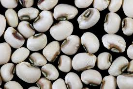
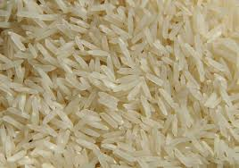
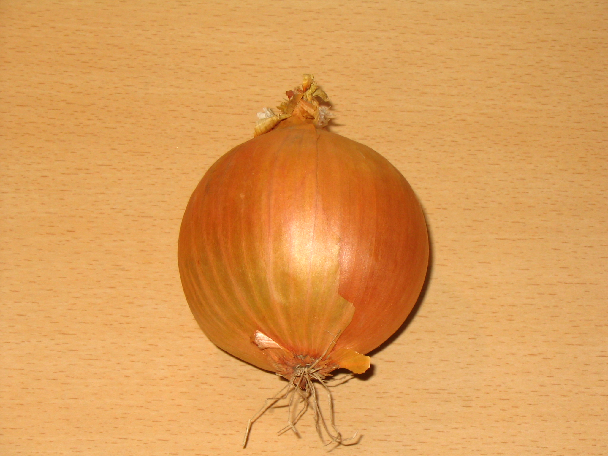
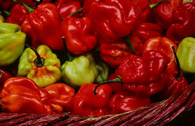
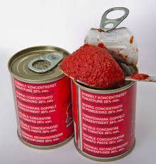

Temps de préparations: 1h 25 min
Historique
L’Atassi, également appelé waakye dans certaines régions d’Afrique de l’Ouest, est un plat emblématique du Bénin et des pays voisins. Il tire ses racines de la riche tradition culinaire béninoise, influencée par les échanges culturels et commerciaux qui ont marqué l’histoire de la région.
Origines
L’Atassi est un mélange de riz et de haricots blancs ou haricots rouges, cuits ensemble avec des épices et souvent servis avec une sauce tomate épicée. Ce plat remonte à plusieurs siècles et trouve ses origines dans les traditions agricoles et culinaires locales, où le riz et les haricots constituaient des aliments de base. Ces ingrédients, faciles à cultiver et à conserver, ont toujours été au cœur de l’alimentation béninoise.
Le nom Atassi pourrait provenir de termes locaux ou d’influences linguistiques venues des peuples voisins, notamment les Yoruba du Nigeria, qui partagent une culture culinaire similaire.
L'Atassi est bien plus qu'un simple plat. Il est un symbole d’hospitalité et est souvent préparé pour les grandes occasions, telles que les réunions familiales, les mariages ou les célébrations religieuses. Il incarne la convivialité et le partage, des valeurs profondément enracinées dans la culture béninoise.
Aujourd'hui, l’Atassi reste l’un des plats les plus appréciés au Bénin. Il est vendu dans les marchés, les rues, et les restaurants, témoignant de sa popularité et de sa capacité à transcender les générations. Les variantes modernes incluent des ajouts comme des œufs durs, du poisson fumé, ou des légumes pour enrichir la recette traditionnelle.
Ingrédients pour quatre (04) personnes
 |
 |
| 100 g de haricots secs crus | 200 g de riz cru |
 |
 |
| 1 gros oignon | 1/2 piment antillais scotch bonnet, ou pas |
 |
|
| 1 bouillon Kub | 1 grosse cuillère à soupe de concentré de tomate |
 |
 |
| 10 cl d'huile pour cuisson | 3 tomates fraiches |
Préparations
-
Faire tremper les haricots blancs une nuit dans de l’eau froide. Les égoutter et les laver.
Faire tremper les haricots blancs pendant toute une nuit pour les ramollir. Une fois prêts, égouttez-les et rincez-les soigneusement sous l’eau claire. -
Faire chauffer un litre d’eau avec une cuillère à café de bicarbonate de soude. Verser les haricots blancs.
Chauffez un litre d’eau en y ajoutant une cuillère à café de bicarbonate de soude pour adoucir les haricots et accélérer la cuisson. Ajoutez ensuite les haricots blancs dans l’eau bouillante. -
Laisser cuire pendant 10 minutes à gros bouillons.
Maintenez une forte ébullition pendant environ 10 minutes pour précuire les haricots blancs. -
Égoutter les haricots blancs, les rincer sous un filet d’eau froide.
Une fois précuits, égouttez les haricots pour éliminer l’eau de cuisson. Rincez-les à l’eau froide pour arrêter leur cuisson et les refroidir légèrement. -
Les remettre à cuire pour environ 1 heure.
Il faut qu’ils soient presque tendres. Les passer sous l’eau et les remettre dans une casserole. Faites cuire les haricots à nouveau pendant une heure pour les attendrir. Une fois presque cuits, rincez-les sous l’eau froide et préparez-les pour la prochaine étape dans une casserole propre. -
Verser le riz cru bien rincé sous un filet d’eau.
Avant de cuire le riz, assurez-vous de bien le rincer pour enlever l’excès d’amidon. Cela empêchera le riz de coller pendant la cuisson. -
Recouvrir le tout avec deux fois le volume du riz en eau salée (1 verre de riz = 2 verres d’eau).
Laisser cuire à couvert jusqu’à ce que le riz ait bu toute l’eau. Ajoutez de l’eau salée en respectant la proportion de 1 verre de riz pour 2 verres d’eau. Couvrez et laissez cuire jusqu’à absorption complète. -
Pendant ce temps faire cuire les oeufs durs pendant 10 minutes et les mettre à refroidir. Ciseler finement un gros oignon.
Faites cuire les œufs durs dans de l’eau bouillante pendant 10 minutes. Refroidissez-les ensuite à l’eau froide. Pendant ce temps, émincez finement un oignon. -
Verser environ 1 cm d’huile au fond d’une poêle qui n’attache pas et y faire fondre les dés d’oignon.
Chauffez environ 1 cm d’huile dans une poêle antiadhésive. Faites-y fondre les dés d’oignon à feu doux jusqu’à ce qu’ils soient translucides. -
Pendant ce temps, laver et couper en petits morceaux trois tomates et un demi piment antillais.
Si vous n’aimez pas la chaleur du piment, utilisez le piment végétarien qui apporte le goût sans le piquant. Lavez soigneusement les tomates et le piment. Coupez-les en petits morceaux. Pour une saveur plus douce, optez pour le piment végétarien au lieu du piment antillais. -
Laisser fondre les tomates et le piment dans la poêle sur feu moyen en remuant souvent.
Ajoutez les tomates et le piment dans la poêle avec les oignons. Faites-les cuire à feu moyen en remuant régulièrement jusqu’à ce qu’ils ramollissent. -
Ajouter un bouillon Kub réduit en miettes.
Émiettez un bouillon Kub et mélangez-le aux légumes pour renforcer les saveurs de la préparation. -
Ainsi qu’une grosse cuillère à soupe de concentré de tomates.
Incorporez une généreuse cuillère à soupe de concentré de tomates pour enrichir la sauce. -
Verser une pincée de bicarbonate de soude pour casser l’acidité des tomates ou bien ajouter une cuillère à café de sucre pour le même effet.
Laisser réduire amoureusement la sauce jusqu’à ce que la majorité du liquide soit évaporée et que la sauce soit dense. Ajoutez une pincée de bicarbonate de soude pour neutraliser l’acidité des tomates, ou bien une cuillère à café de sucre selon vos préférences. Laissez mijoter doucement la sauce jusqu’à ce qu’elle épaississe et que les saveurs se concentrent. -
Servir le riz aux haricots blancs chaud avec la sauce chaude également, les oeufs durs et un quartier de citron pour ceux qui aiment !
Disposez le riz aux haricots blancs dans une assiette avec la sauce bien chaude, les œufs durs coupés en quartiers et, pour ceux qui le souhaitent, un quartier de citron pour rehausser les saveurs.
Bon appétit !
Avec ces étapes détaillées, vous êtes prêts à réaliser un délicieux plat d'Atassi qui plaira à coup sûr à tous vos invités ou votre famille. Ce plat simple mais riche en saveurs, vous transportera directement au Bénin.
Retrouver ici d'autres recettes d'Atassi.| Notez cette recette et laissez un commentaire pour nous faire part de vos avis! |